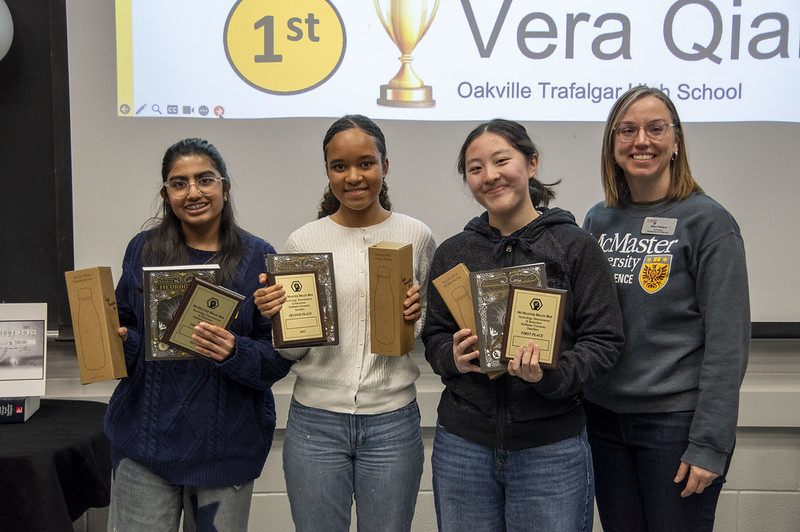
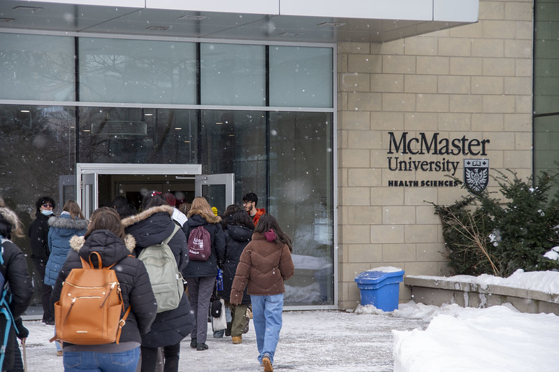
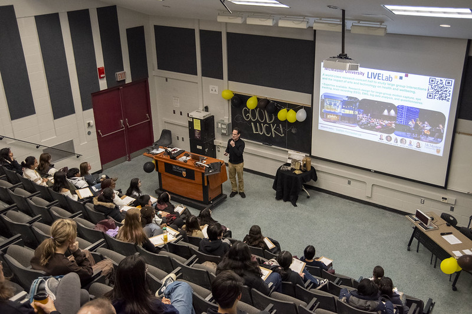
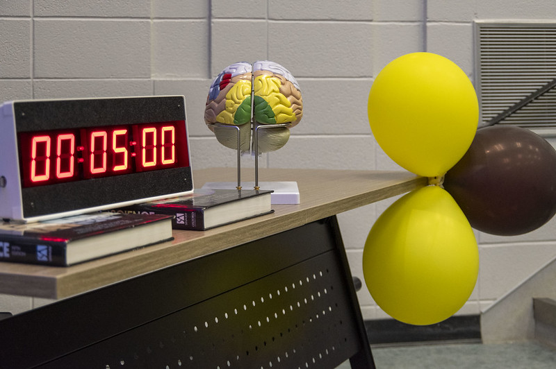
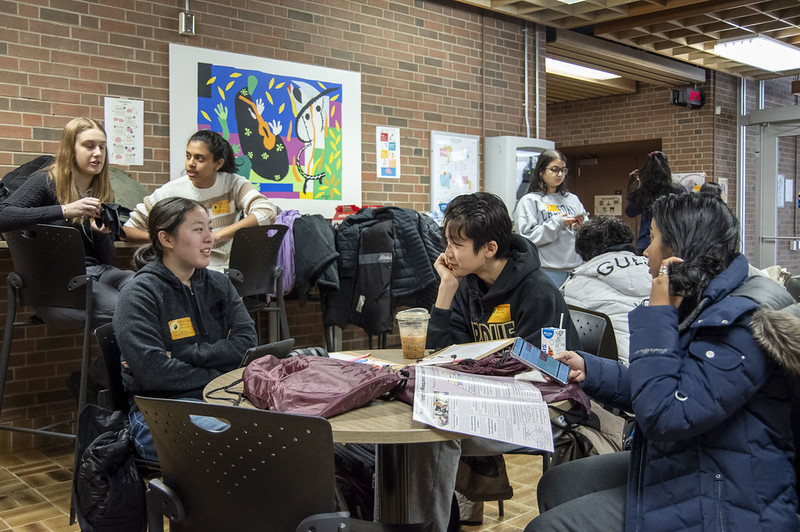

- 
- 
- 
- 
- 
now playing: out of my head by charli xcx
my passion for neuroscience first began in grade 10 while self-studying AP psychology! (got a 5 btw im the goat.) in particular, unit 2: biological bases and behaviour really piqued my interest-- learning the complexities of the brain showed me how much we currently know, and how much is still unknown to us.
coincidentally, that was also the year i learned about the brain bee through my biology teacher! hosted in various cities in canada, the brain bee is a neuroscience competition designed for high school students, pulling questions from free resources provided to you. that year, i barely studied because i thought my AP psychology knowledge would be enough. i was completely wrong and flopped, i think i got barely any questions right! i also fell asleep at some point since i stayed up the night before :( other than the actual competition itself, we got to tour the mcmaster livelab, dissect sheep brains, and do optogenetics on fruit flies!
this year, i once again signed up for the brain bee! i crammed 2 weeks before, staying up to nearly 4am every other day. even with that, i thought i had no chance since i didn't study until pretty late. however, i managed to win the competition, qualifying me to the canadian national brain bee! this year, we got to tour the mcmaster anatomy lab with real cadavers, listened to the action potential of a crickets leg, and did optogenetics on fruit flies once again!
scroll or click to go through the pics!
if you're looking to compete in your local brain bee next year, here are some study materials they've used in past years to get a head start!
if you've made it this far, i'd love to know your intended major!